Калининград и область
Короткий аудиорассказ о регионе: почему он особенный, как устроена история места и что важно заметить в поездке.
Скачать MP3Сайт-путешествие на несколько минут: как земля пруссов стала орденом, королевством, собравшим Германию, — и самым западным регионом России. Внутри — карта эпох, игра с мостами Эйлера, хронология и квиз.
Листайте эпохи стрелками, свайпом по карте или кнопками с годами. Границы схематичны: важно не где линия, а чья земля.
Шесть шагов от Версаля до сегодняшнего дня. Листайте стрелками.
Точки — быстрые переходы. Карточки раскрываются по нажатию.
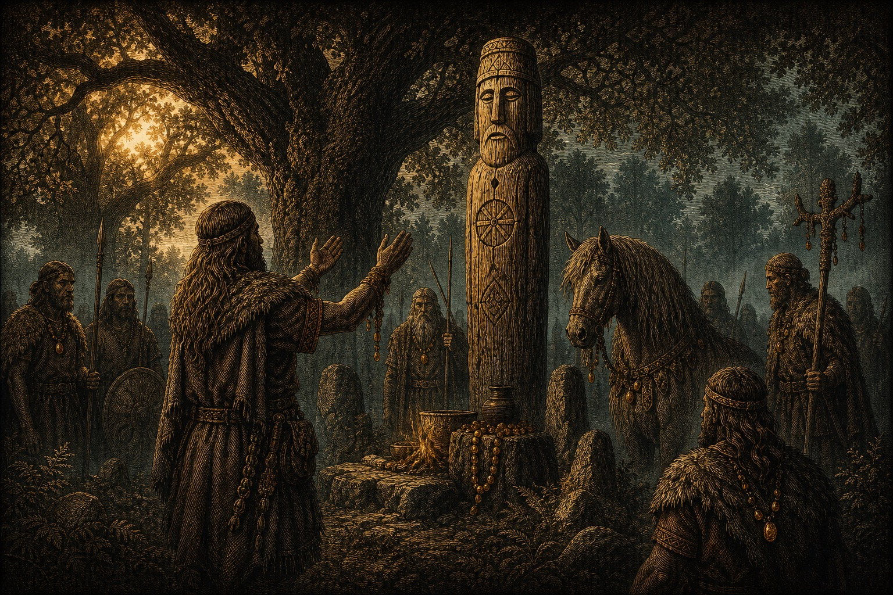
Между Вислой и Неманом тысячу лет жили пруссы — балтские племена, родня литовцев и латышей. Не германцы и не славяне: язычники со священными рощами и культом коня.
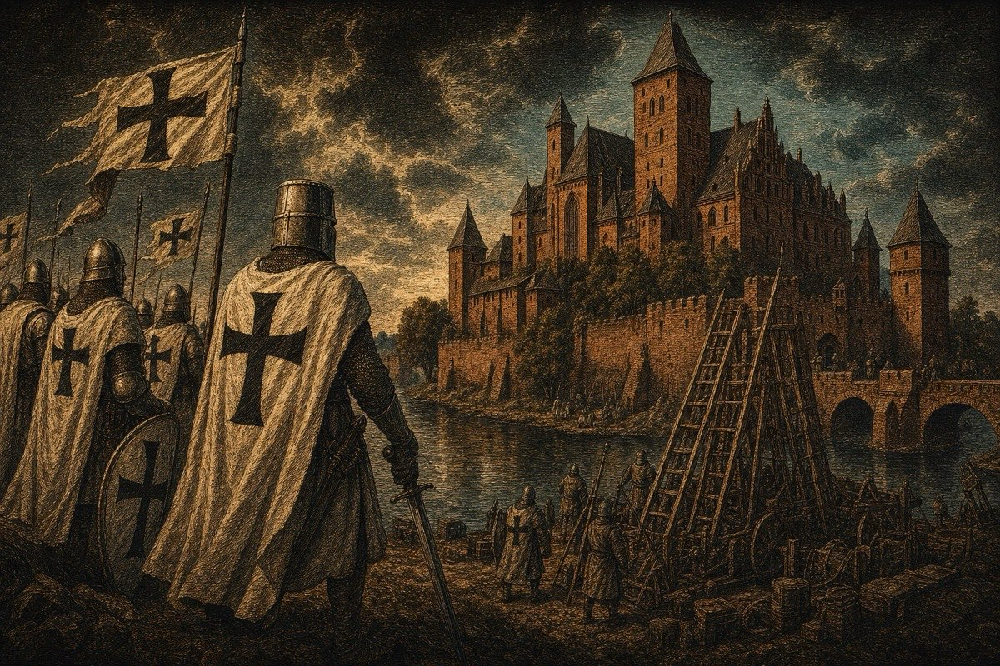
Немецкие рыцари-монахи, приглашённые крестить пруссов, за полвека покоряют их — и строят на этой земле собственное государство.
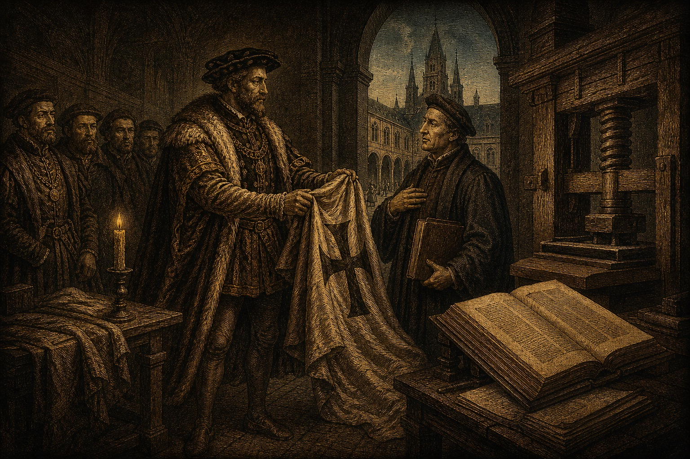
Последний магистр Альбрехт по совету Лютера снимает орденский плащ — и превращает монашеское государство в светское герцогство.
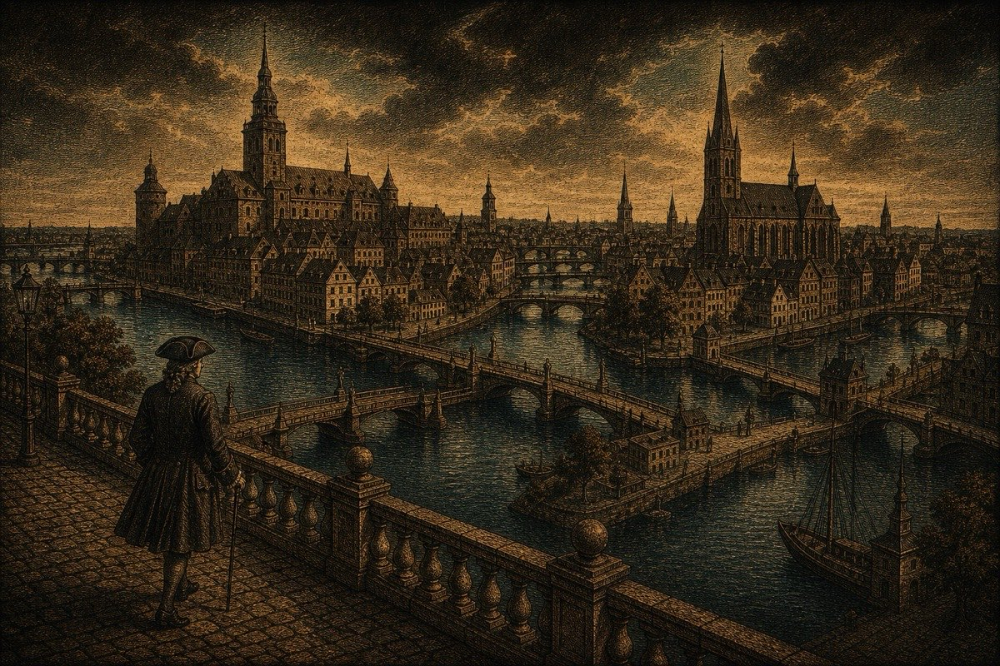
18 января 1701 года курфюрст Фридрих сам возлагает на себя корону — здесь, в Кёнигсберге.
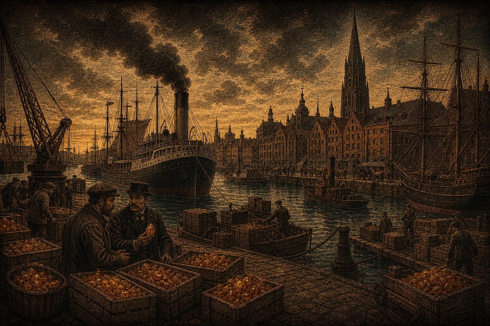
Пруссия побеждает Австрию, затем Францию — и собирает вокруг себя Германию. Кёнигсберг — процветающий восточный форпост.
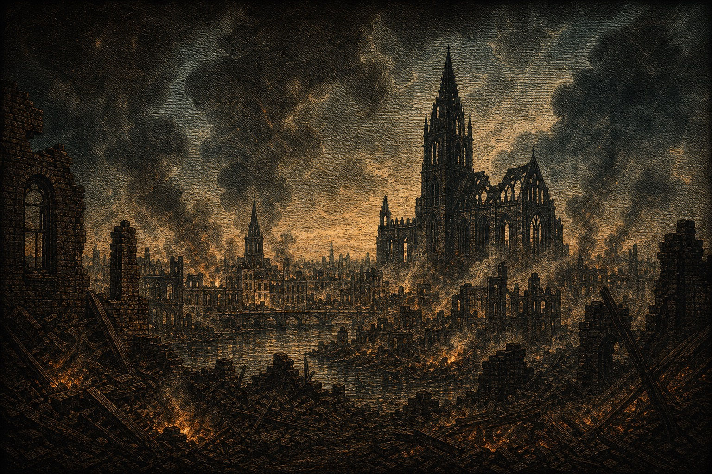
Версальский мир перекраивает карту — и Восточная Пруссия впервые становится островом.
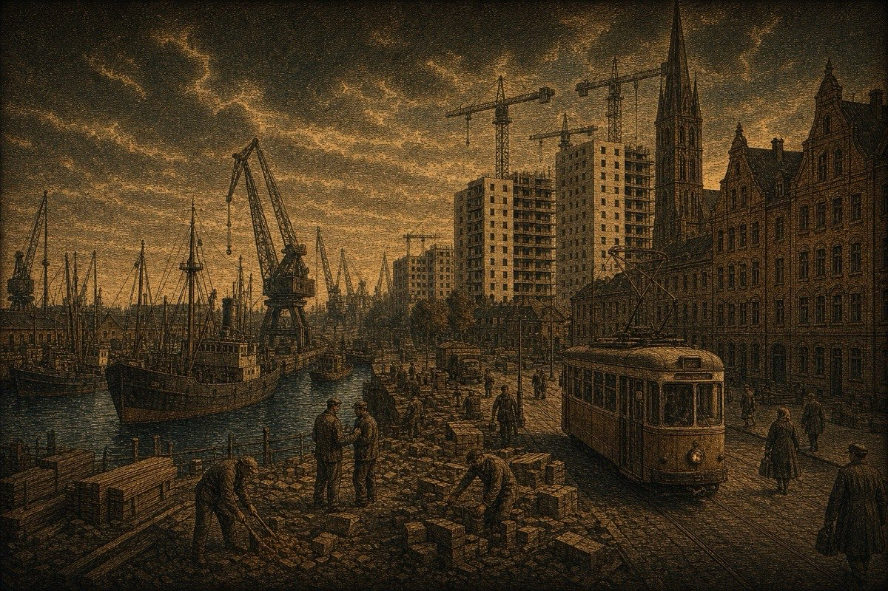
Потсдам делит провинцию, а 1946 год меняет здесь всё: имена, людей, язык.
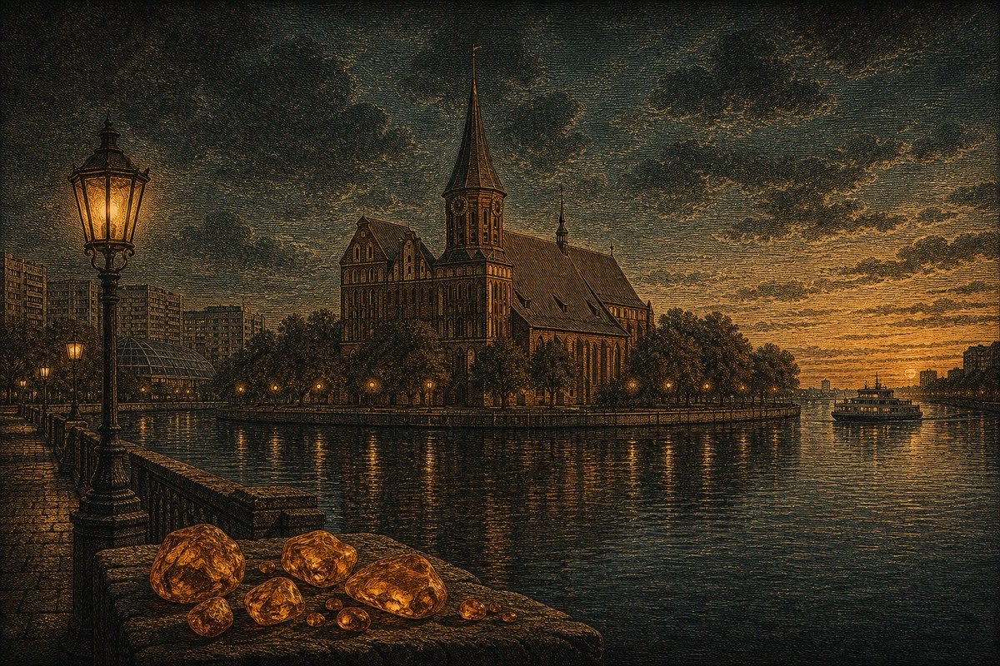
СССР распадается — и условная линия с Литвой в одну ночь становится государственной границей.
Почему в этой истории всё время мелькают Австрия, Франция, Россия — и куда делась сама Пруссия.
Главный соперник. Двести лет Габсбурги считались «первыми среди немцев», пока Фридрих II не отнял у них Силезию, а Бисмарк в 1866-м не выбил Австрию из германского проекта. Германия объединилась «по-прусски» — без Вены.
Качели реваншей. 1806-й: Наполеон растоптал Пруссию за неделю. 1871-й: пруссаки провозгласили свою империю в Версале. Эти качели остановятся только в 1945-м.
Сосед-маятник: враг в Семилетнюю войну — и четыре года владелец этих земель; союзник против Наполеона; противник в мировых войнах — и в итоге наследник северной трети провинции.
Парадокс финала: Пруссия создала Германию — и растворилась в ней. А в 1947-м победители официально упразднили само слово «Пруссия». Осталась земля. Вы сейчас на ней стоите.
Горожане спорили: можно ли пройти по всем семи мостам, не ступив ни на один дважды? Эйлер ответил математикой — и заодно придумал теорию графов. Проверьте себя: нажмите берег, с которого начнёте, и идите по мостам.
Выберите берег или остров, с которого начнёте путь.
Королевский замок стоял здесь семь веков — от рыцарей 1255 года до штурма 1945-го. Руины пережили войну ещё на двадцать лет: в 1967–69 их взорвали. Покрутите 3D-реконструкцию — так замок выглядел незадолго до гибели.
Реконструкция — кафедра исторической информатики МГУ. Вживую: VR-экскурсия у Кафедрального собора, движущиеся макеты в музее «Кёнигсберг» в Зеленоградске и макет 1:25 в парке «История в архитектуре».
Точки для поездки из Орловки: фильтруйте по слоям, открывайте карточку, смотрите график, цену, время на визит и сразу стройте маршрут.
Каждое место здесь прожило две жизни. Немецкое имя — курсивом.
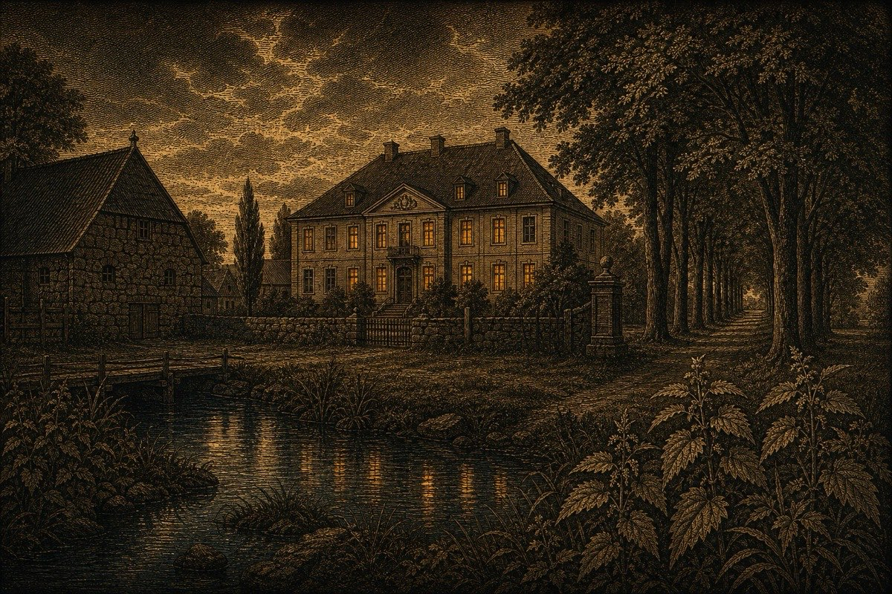
вы здесьДворянское имение XVIII века семьи Нойманн-Фельдберг из Мекленбурга — почти 500 гектаров по обе стороны ручья. От фольварка уцелел главный дом: его отреставрировали в 2000-х — это и есть ваш отель «Усадьба». Соседний «замок Нессельбек» — новодел по мотивам.
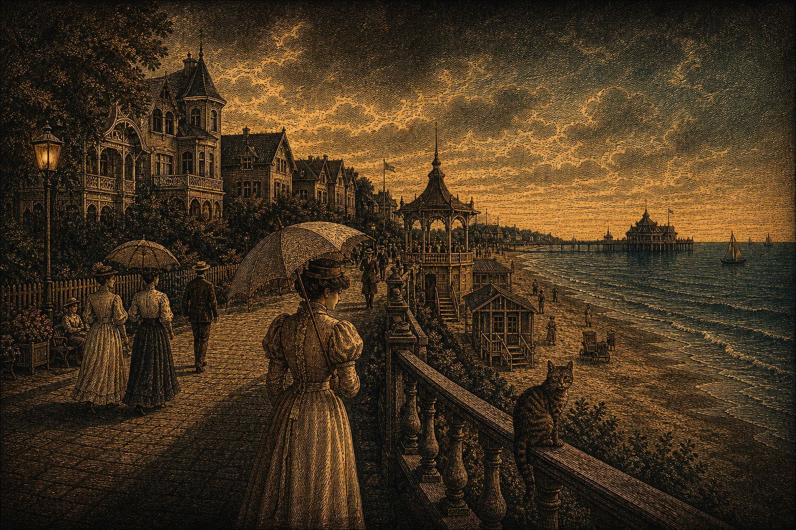
Королевский морской курорт с 1816 года, главная здравница Восточной Пруссии. Сегодня — променад, довоенные виллы и неофициальная столица котов.
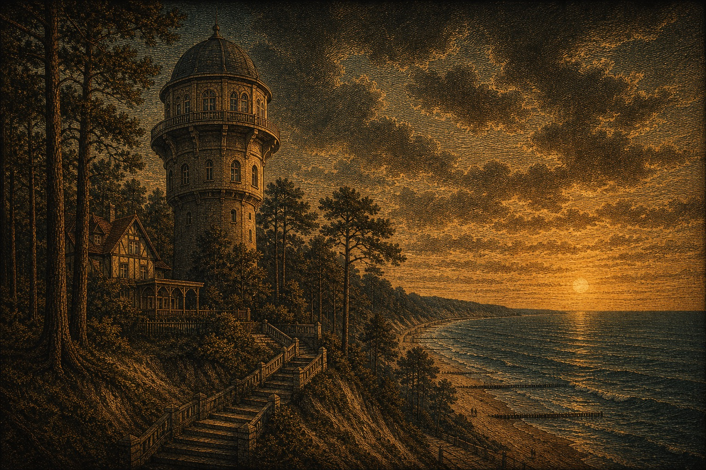
Курорт в соснах на высоких дюнах; водонапорная башня 1908 года — символ города. Прусская курортная архитектура уцелела здесь лучше, чем где-либо в области.
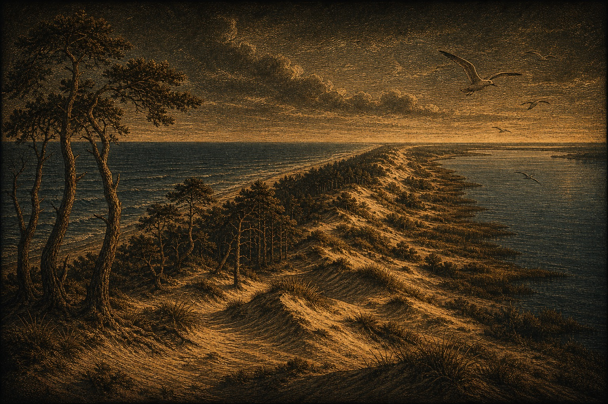
98 километров песчаной стрелы между морем и заливом, объект ЮНЕСКО. Странствующие дюны, «танцующий лес», старейшая орнитологическая станция. Немцы звали косу «прусской Сахарой».
Область живёт как остров: своя энергетика, свои паромы на Усть-Лугу, аэропорт Храброво как главная пуповина. Экономика — сборочные производства особой зоны, порт и рыба, янтарь, IT и стремительно выросший внутренний туризм: после 2020-го сюда поехала вся страна, и набережные Зеленоградска летом напоминают Сочи. При этом ощущение «немного Европы», которое вы поймали в центрах городов, — не иллюзия: брусчатка, черепица, форты и кирхи здесь старше самой области на столетия, и местные научились этим наследием дорожить — его реставрируют, обживают и превращают в идентичность, которой больше нет ни у одного российского региона.
Два готовых аудио: общий рассказ про Калининград и область, плюс отдельная биография Канта. Можно включить на прогулке или скачать заранее.
Короткий аудиорассказ о регионе: почему он особенный, как устроена история места и что важно заметить в поездке.
Скачать MP3Биография философа в контексте Кёнигсберга: город, университет, привычки, эпоха и след, который остался в Калининграде.
Скачать MP3